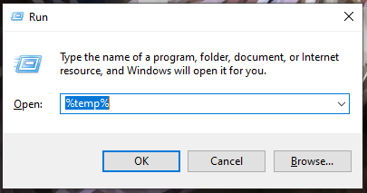
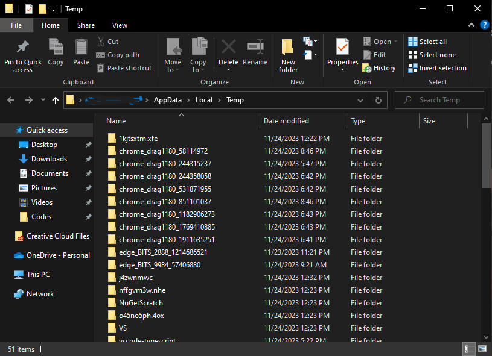
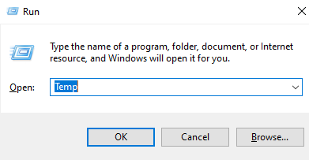
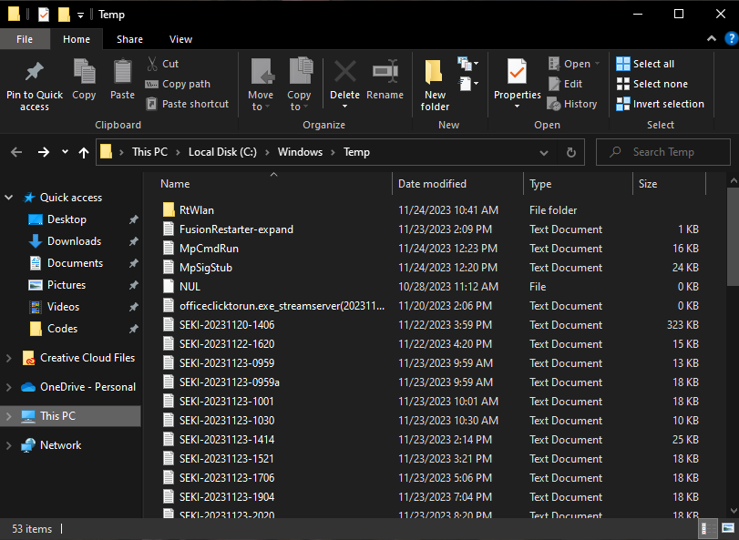
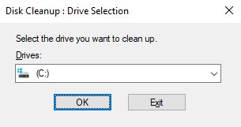
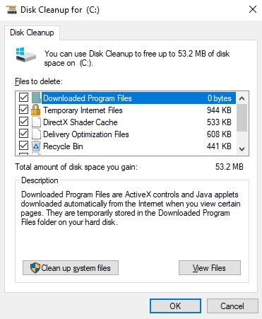
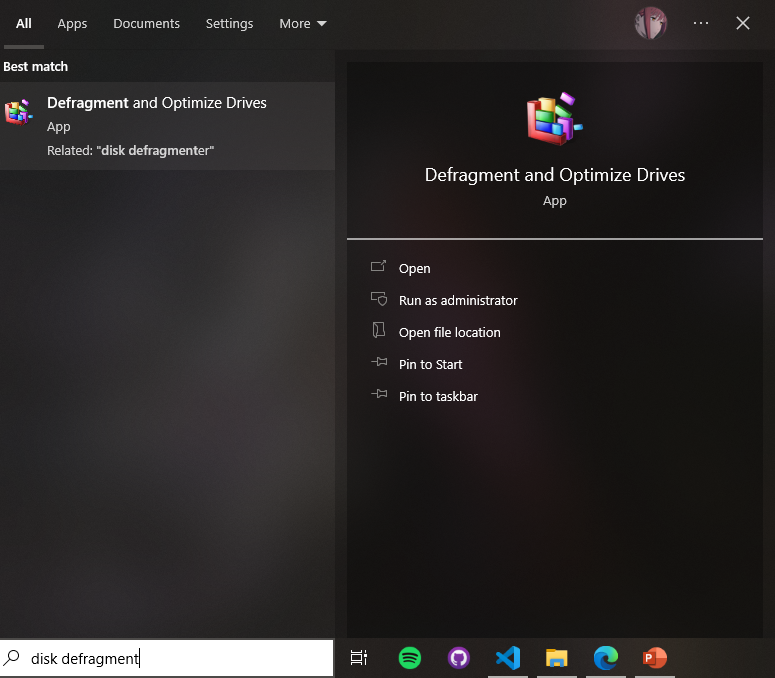
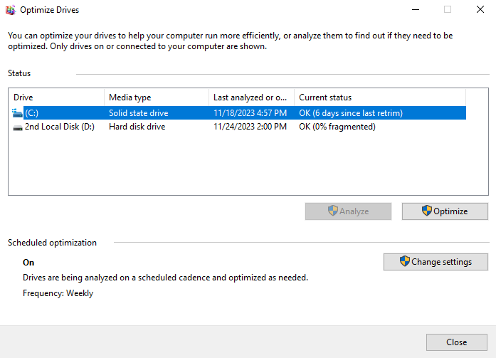

>Delete temporary files
Deleting temporary files is like clearing trash in your house, you would not want a house that is full of trash, would you? Removing them will make your computer performance boosts.
Here are some tips on how to delete those pesky files that you do not need.
-
Clearing %temp% Files
- Click Windows + R at the same time and it will show a window like this:
- Type %temp% on input box then click OK.
- It will show up a new window which you'll see many files. You can delete those since you won't need it anyways, deleting them can speed up your pc performance by 5%.
- Note: Those files you see are used by applications TEMPORARILY. If you shut down your computer, those files will NOT be deleted, therefore will be a waste and can slow your machine if you use your computer again.
img shows a window application.
img shows a window application.
-
Clearing Temporary Files
- Next is same with clearing %temp%, but in this case, we will delete those files in another temporary folder which WINDOWS uses.
- This is SAFE. I personally do this after the windows update.
- Click Windows + R at the same time and it will show a window like this:
- Type Temp on input box then click OK.
- It will show up a new window which you'll see many files. You can delete those since you won't need it anyways, deleting them can speed up your pc performance a bit.
- Note: Those files you see are files that are needed for windows updates, such as security updates, features and such. These files will be irrelevant once the update is done and you can safely delete those files if needed.
img shows a window application.
img shows a window application.
-
Disk Cleanup
- Click Windows and type Disk Cleanup and you should see a result like mine:
- Click Enter and you should see a window asking you what drive you should use for cleaning up:
- Pick what drive you want to clean up and click Enter. You should see a window in progress, this will take time depending on how much files you have on your drive that needs to be deleted. After that, you shall see a window like this:
- As for mine, I have 53.2MB worth of unnecessary, temporary files, etc. that are good to be deleted. Size may vary depending on what you want to check on form.
- Note: Disk Cleanup is a utility that helps free up space on your hard drive by deleting temporary files, Internet cache files, and unnecessary program files. It can also help improve system performance by freeing up space for your operating system to use.

img shows a window panel.
img shows a window application.
img shows a window application.
-
Optional: Disk Defragment
- Click Windows and type Disk Defragmentation and you should see a result like mine:
- Click Enter and you should see a window that has list of your drives, pertaining on what you drive you should defrag.
- Now, simply choose what drive you want to defrag, then click on it and you can pick if you want to Analyze or Optimize it. As for me, I always optimize the drive first and wait for it to be finished, then analyze it afterwards. Order is no importance.
- Note: Disk defragmentation is the process of rearranging the data on a hard disk drive (HDD) so that it is stored in contiguous blocks. This can improve the efficiency of data access and overall computer performance.
- Additional Note: If you have an SSD Drive, you should NOT use it to defrag, doing this will have no result since SSD is already fast no matter how space it has available. You should only do this for HDDs for better performance and faster reads and writes.
img shows a window panel.
img shows a window panel.